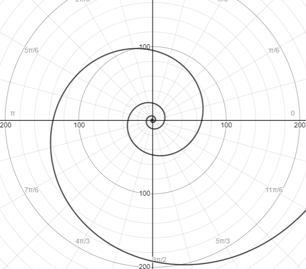
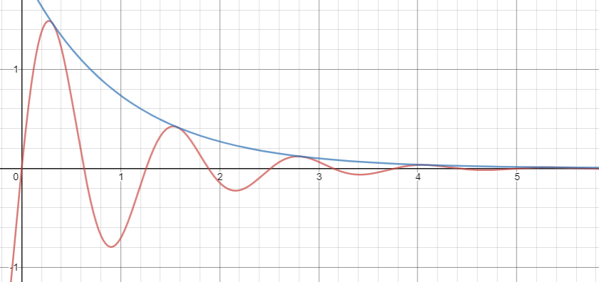

Dear friends & family,
I hope this message finds you well! As we experience this challenging time together (and yet apart), I want to keep you posted with those things that are continuing to fill my days with meaning.
The legendary physicist Richard Feynman famously asked his Caltech students to formulate one simple sentence to be passed on to the future of humanity, provided that all other knowledge is forever lost. Of course, there can't possibly be a "right answer" to this question; I think the intention of the exercise is instead to identify something that characterizes "Truth."
Feynman's answer: "The universe is made of atoms."
I have been posing Feynman's question to friends. I have found everyone's responses to be deeply meaningful. Some of my favorites have been "Walk slowly; drink lots of water" (Parker), "Joy and hope are a choice" (Anna), and Ecclesia semper reformanda est or "The church must always be reformed" (Emma).
The diversity of these responses reminds me that "Truth" is approximately the "sum" of many of these kinds of sentences, and that each of these sentences is imbued with "Truth." In the language of linear algebra, it's as if each sentence is a basis vector of the "Truth"-space. In the language of music, it's as if each sentence is a note in a scale. In the language of quantum mechanics, it's as if each sentence is an eigenstate of a Hermitian operator.
Hearing friends' answers to Feynman's question feels a lot like finding an orthonormal basis, sounding out a tonality, or solving the Schrödinger equation. The more answers I hear, the more I feel that I am discerning "Truth."
But the "sum" of these sentences only approximates "Truth"; "Truth" is exactly the "integral" over an infinite number of these kinds of sentences. Since we have finite lifetimes and finite capacities to perceive the world, does this mean that we will never fully experience "Truth"?
This is the question Emma posed as we rode the metro from downtown Chicago to Loyola last weekend. She resolved it nicely, defining "Truth" to be at the pole:
The spiral never touches the pole, just as we never exactly realize "Truth." But eventually, the spiral becomes indistinguishable from the pole, just as we approximate "Truth" by taking a very large sum.
Emma's spiral is a two-dimensional rendering of my familiar joy-bliss diagram, which was kind of amazing.
It has been empowering to realize that we can discern "Truth" by simply keeping an open mind to others' perspectives. I am blessed to receive these perspectives as I am so often surrounded by friends who are willing to share what is on their hearts. The separation we are all feeling from one another in these strange weeks brings the value of these friendships into even sharper focus. I'm reminded of this line from Bob Marley's "No Woman No Cry":
"Good friends we have, good friends we've lost / Along the way / In this bright future, you can't forget your past / So dry your tears, I say"
As I reflect on the generosity of my friends, I think about all the times I have crashed in their apartments asking to borrow their guitars. From an early age, I had always wanted to play the guitar, but until college, I was never able to get my hands on one. Amazingly, I am now surrounded by guitars, though I still do not own one. Everything I've picked up has occured on the guitars of Evan, Ben, Christian, Roma, Michelle, Cameron, Stephanie, Dany, Mikey, Nathan, Benji, and Ella.
As Roma left for Archer this semester, she kindly lent me her acoustic guitar. I've played her guitar so much these past two weeks, probably out of how much I long to see everyone again. I am feeling, now more than ever, that guitars are a lot like people, longing to be loved. In this lonely time of physical isolation, I have felt music love me back.

Roma's acoustic guitar.
Last night, I recorded myself playing a few tunes on Roma's guitar. I hope these songs remind you of the many times you have helped me, whether through a conversation, a phone call, a thoughtful note, a hug, or by letting me crash on your couch for hours, strumming away.